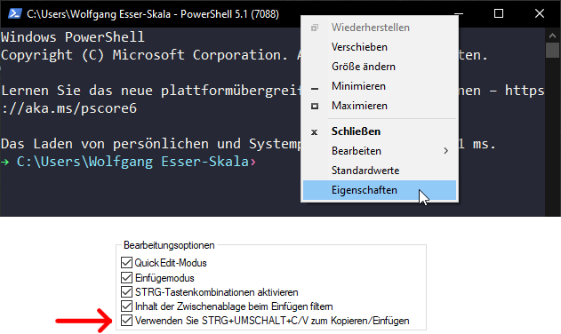

Bash Unit 2
Files and file systems
Permissions
Next, we will use the chmod command (https://en.wikipedia.org/wiki/Chmod). This command uses three digits between 0 and 7 to set the permissions of (i) the user, (ii) the group, and (iii) everyone else. The digit defines the permission, as explained in the following table.
| x | Permission | rwx | Binary |
|---|---|---|---|
| 7 | read, write and execute | rwx |
111 |
| 6 | read and write | rw- |
110 |
| 5 | read and execute | r-x |
101 |
| 4 | read only | r-- |
100 |
| 3 | write and execute | -wx |
011 |
| 2 | write only | -w- |
010 |
| 1 | execute only | --x |
001 |
| 0 | none | --- |
000 |
Now, we will create a test file and then change permissions with chmod. Look at the updated permissions with ls -l after each run of chmod in order to understand what changed.
# Create the file
echo "Hello!" > day2/greeting.txt
ls -l day2
# Change permissions
chmod 711 day2/greeting.txt
ls -l day2
chmod 722 day2/greeting.txt
ls -l day2
chmod 733 day2/greeting.txt
ls -l day2
chmod 744 day2/greeting.txt
ls -l day2
chmod 755 day2/greeting.txt
ls -l day2
chmod 766 day2/greeting.txt
ls -l day2
chmod 777 day2/greeting.txt
ls -l day2
chmod 700 day2/greeting.txt
ls -l day2
man chmodExercise 2.1
- Create a new directory called
secretswithin in the directory~/day2. - Enable full access to this directory for the owner of the directory, read access for the group, and no access for others
Getting files
Make sure you are in your home directory.
pwd
cd ~/
# same as "cd " or "cd ~", since the default value
# for the dir argument is HOME (see "man cd")
pwdObtain the list of gRNAs.
# look at the man pages of the following commands – what is their purpose?
man mv
man cp
# now try it
mv /resources/bash/gRNAs.txt ~/ # this will not work
cp /resources/bash/gRNAs.txt ~/ # this works
# Why does mv not work? Look at file permissions:
ls -l /resources/bash/gRNAs.txt
ls -l ~/gRNAs.txtNow explore the copied file.
head gRNAs.txt
head -5 gRNAs.txt
tail -5 gRNAs.txt
less gRNAs.txt
more gRNAs.txt
# Count the number of lines
wc -l gRNAs.txtYou may be used to a workflow where you first copy a file (e.g., Ctrl+C), then go to the destination directory, and paste it there (e.g., Ctrl+V). By contrast, the copy command cp does both the copying and pasting.
Exercise 2.2
Copy the file gRNAs.txt from your home directory into the directory day2. Then rename the copied file in this directory to gRNAs_exercise.txt.
Editing in nano
Now add a line at the end of the file gRNAs.txt that is located in your home directory, adding the gRNA sequence “ACTGACTG”. Use the nano editor for this purpose. To quit the nano-editor you need to press Ctrl+X. Then type y+Enter to save the changes. Nano commands are shown in the editor and can be found on the internet. A list is provided below.
Nano commands:
| Command | Function |
|---|---|
| ctrl+r | read/insert file |
| ctrl+o | save file |
| ctrl+x | close file |
| alt+a | start selecting text |
| ctrl+k | cut selection |
| ctrl+u | uncut (paste) selection |
| alt+/ | go to end of the file |
| ctrl+a | go to start of the line |
| ctrl+e | go to end of the line |
| ctrl+c | show line number |
| ctrl+_ | go to line number |
| ctrl+w | find matching word |
| alt+w | find next match |
| ctrl+\ | find and replace |
nano gRNAs.txtNow use nano to modify the shell to make things prettier. To do so change the file .bash_profile. This file contains settings for each user (the naming is just by convention). It starts with a ., which for Linux means the file is hidden.
nano ~/.bash_profile
# This creates the file and also opens it in nanoAdd the following lines to .bash_profile in nano, then exit the file and save it - see the commands above.
In Windows PowerShell, copy/paste works best if you enable the option to do so via Ctrl+Shift+V, as shown below. 
if [ -x /usr/bin/dircolors ]; then
test -r ~/.dircolors && eval "$(dircolors -b ~/.dircolors)" || eval "$(dircolors -b)"
alias ls='ls --color=auto'
alias grep='grep --color=auto'
fiThe changes we added to .bash_profile will come into effect next time you log in. To also activate them for your current login, you can source the file, executing the commands stored within.
ls -l *
source ~/.bash_profile
ls -l *Also, notice the difference in ls commands to show hidden files (like .bash_profile).
ls -l
ls -alIf your grade sheet does not show that the content of .bash_profile is correct but it still works, then leave it. There may be a small difference in between your version and the expected one that does not impact the functionality.
Zipped files
Now let’s download all human gene sequences from Ensembl. Download the file to your home directory.
man wget
wget http://ftp.ensembl.org/pub/release-103/fasta/homo_sapiens/cds/Homo_sapiens.GRCh38.cds.all.fa.gzIf the above fails, then you can also copy the file from the resources directory into you home directory.
cp /resources/bash/Homo_sapiens.GRCh38.cds.all.fa.gz ~/To make sure you have the entire file properly downloaded, compare the MD5 hash of the file. MD5 hash functions are a compact digital fingerprint of a file. The MD5 hash of the file should be b16d46bf09c3b8b7909624f1e6c414ce.
md5sum ~/Homo_sapiens.GRCh38.cds.all.fa.gz
md5sum /resources/bash/Homo_sapiens.GRCh38.cds.all.fa.gzUse the du command to determine the file size.
du Homo_sapiens.GRCh38.cds.all.fa.gz
# the -h argument displays the file size in a human-readable format
du -h Homo_sapiens.GRCh38.cds.all.fa.gzHave a look at this file.
head Homo_sapiens.GRCh38.cds.all.fa.gzThis doesn’t look great. Remember to clean up your terminal.
clearThe above file is zipped. Now unzip it.
gunzip -c Homo_sapiens.GRCh38.cds.all.fa.gz
# This command will run through the entire file which is very long.
# Press Ctrl+C to stop the command.
man gunzip
# -c --stdout --to-stdout
# Write output on standard output; keep original files unchanged.
# If there are several input files, the output consists of a sequence
# of independently compressed members. To obtain better compression,
# concatenate all input files before compressing them.Again, remember to clean up your terminal.
clearCan we use head on the unzipped output? Yes - this is done using a pipe.
Pipes
Linux pipes enables you to pass the output of one command to another command.
| Pipe command | Function |
|---|---|
cmd < file |
use file as input for command cmd |
cmd > file |
write output to file |
cmd >> file |
append output to file |
cmd 2> stderr |
write error output to file |
cmd &> file |
send output and error to file |
cmd1 | cmd2 |
send output of cmd1 to cmd2 |
Let’s have a look at the first few lines of this file.
gunzip -c Homo_sapiens.GRCh38.cds.all.fa.gz | headSome programs let you look at decompressed output, for example
zless Homo_sapiens.GRCh38.cds.all.fa.gz
# very similar to:
gunzip -c Homo_sapiens.GRCh38.cds.all.fa.gz | lessNow we can also count the number of lines in this file:
gunzip -c Homo_sapiens.GRCh38.cds.all.fa.gz | wc -lExercise 2.3
Place the following files into the directory ~/day2, using pipes:
- Store the number of lines of
Homo_sapiens.GRCh38.cds.all.fa.gzinto the filelineNumber.txt. - Write the first 15 lines of
Homo_sapiens.GRCh38.cds.all.fa.gzinto the filelines1.txt. - Write the 31th to 35th line of
Homo_sapiens.GRCh38.cds.all.fa.gzinto the filelines2.txt. - Store the size of
Homo_sapiens.GRCh38.cds.all.fa.gzin Megabytes into the filesize.txt.